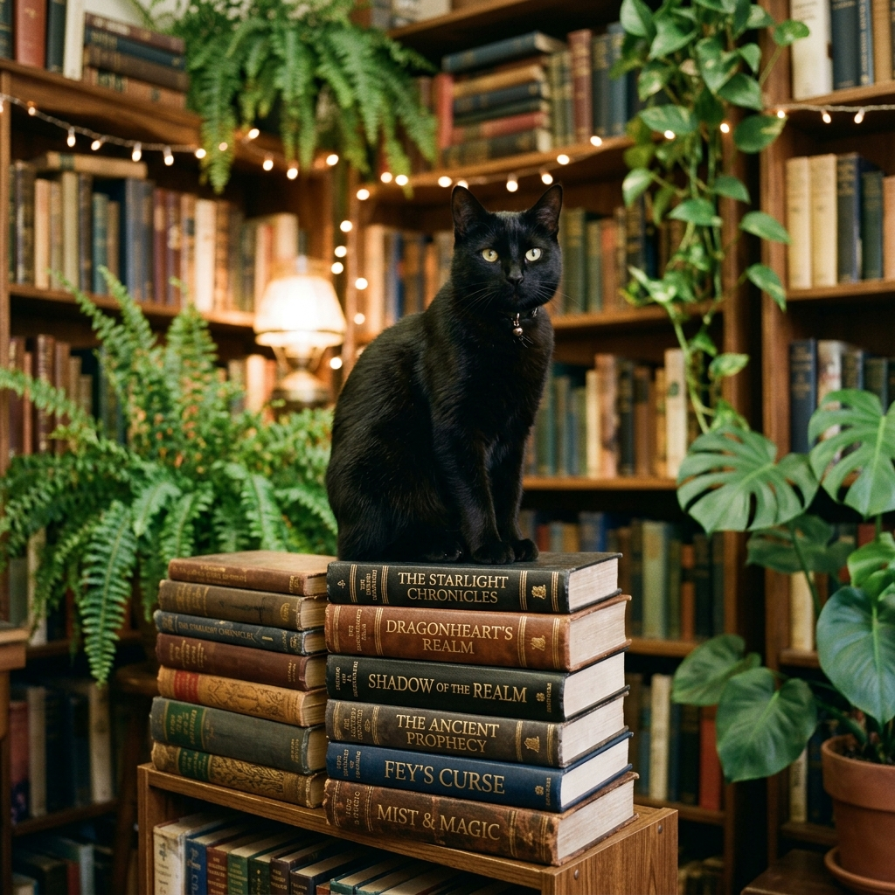
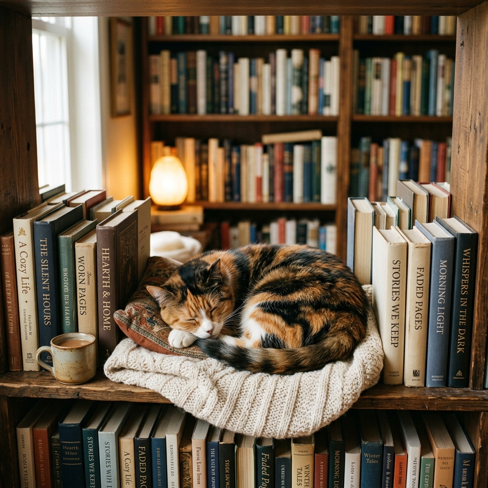
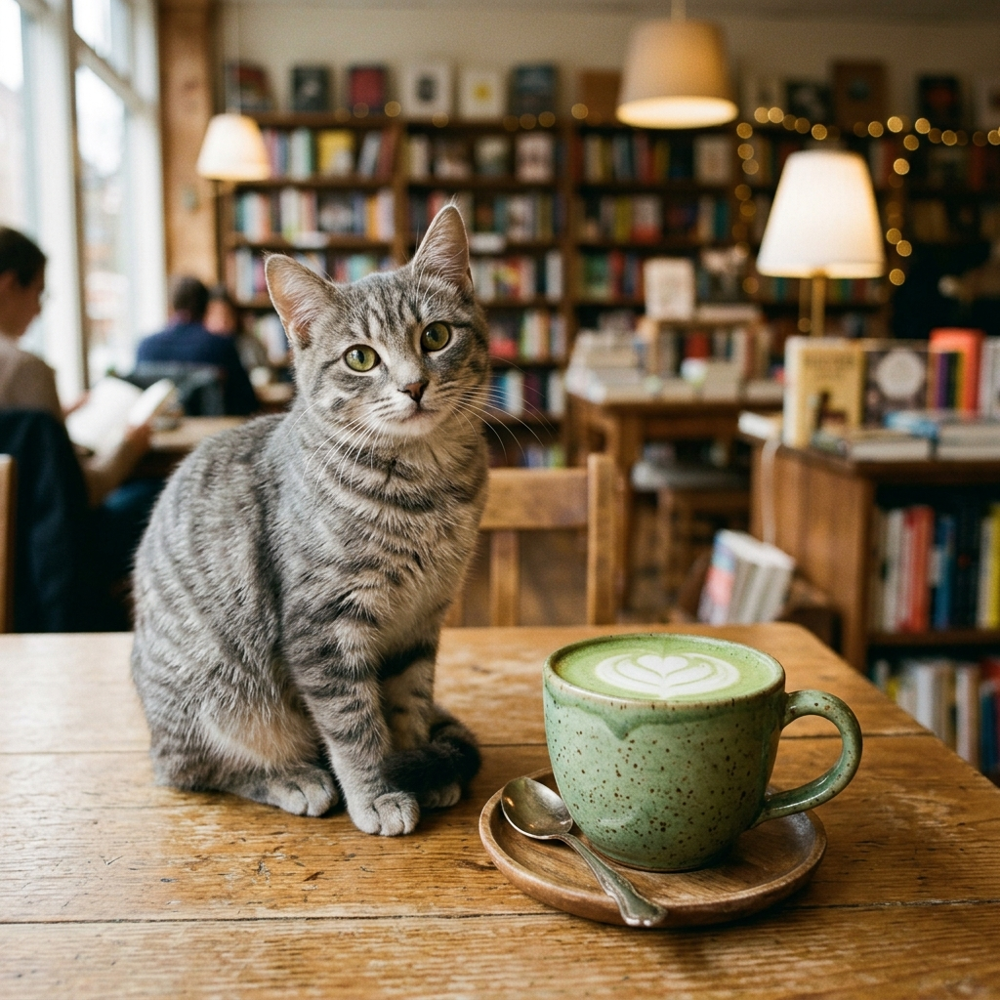

A Sanctuary Born in an Alleyway
Booktail was founded in 2024 by Vincent, a lifelong book lover, and a team of local NYC animal rescue advocates. Frustrated by the lack of quiet, green, and relaxing community spaces in Manhattan, they set out to build a sanctuary that combines three of life's greatest pleasures: rich literature, quality coffee, and animal companionship.
We discovered an empty, historic brick-and-mortar warehouse tucked away at the end of a cobblestone alley in Greenwich Village. Working with local craftspeople, we transformed the space, retaining its rustic stone walls and adding warm cedar wood beams, hanging plants, and a small, trickling koi pond with a wooden footbridge.
Importantly, we wanted to make a difference. All of our resident cats are rescues from local shelters. Booktail serves as their permanent, spacious home, but we also act as an advocate for feline rescue across NYC. Through our bookings, we raise funds to support medical bills and shelter programs citywide.
Meet our Feline Residents
Every cat at Booktail has a unique personality, a favorite sleeping spot, and even their own preference in reading material.
Barnaby
Domestic Shorthair (Orange Tabby)Barnaby is the self-appointed "general manager" of Booktail. He loves sleeping next to warm coffee mugs and will gently nudge your hand if you stop petting him. Extremely social, he greets almost every customer at the door.

Midnight
Bombay Mix (Sleek Black Cat)Midnight is our resident philosopher. He is usually found perched on the higher shelves watching cafe goers or curled up on top of open fantasy novels. He is quiet and mysterious but will melt for a chin scratch.

Cleo
Calico Tabby (Three-Colored Calico)Cleo is a gentle, introverted sweetheart who loves napping inside wooden bookshelves. She is very calm and quiet, making her the perfect reading buddy. Settle into an armchair, and she might curl up on your lap.

Matcha
British Shorthair (Grey Tabby)Matcha is our youngest, most high-energy resident. He inspects every cup of matcha latte served, plays in paper bags, and loves chasing feather wands. He is friendly, curious, and loves interactive toys.